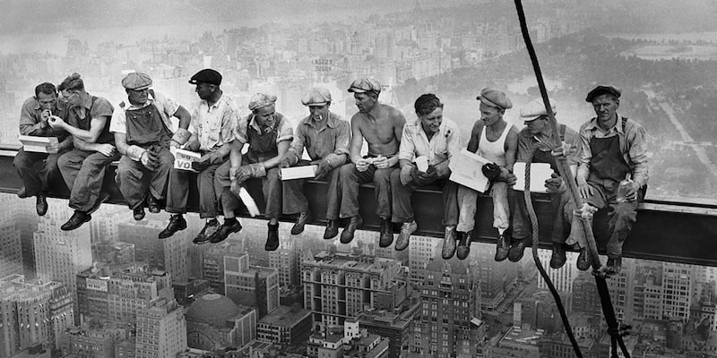
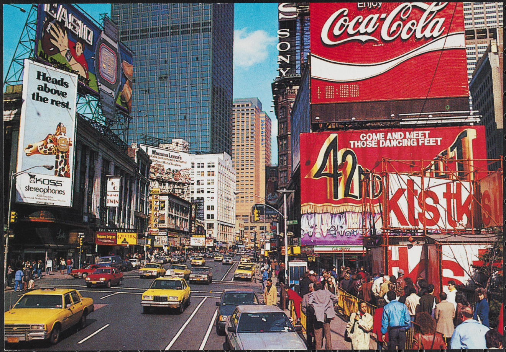
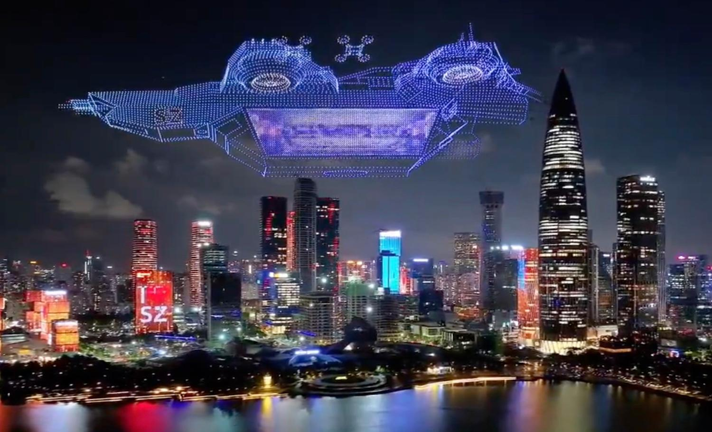

| Second Industrial Revolution | Interwar Period | Post-War Period | Information Age |
|---|---|---|---|
| 1850-1914 | 1914-1945 | 1945-1990 | 1990-2026 |
 During the second Industrial Revolution, further
During the second Industrial Revolution, further growth continued regarding the industrial but had key differences. Mechanical inventions saw a boom with early cars, motors, telephones, airplanes in the western world, along with new ideas in physics. Due to colonialism and the spreading of this inventing culture, other parts of the world such as British India saw great inventions by locals through Anglo-Asian cultural exchanges, such as foundations of radio and wireless communication along with developments in physics, mathematics and science. European colonialism continued its expansion into Africa and more parts of Asia, until much of the world was under European influence. |
 The interwar period was a heavily turbulent and volatileperiod in world history, starting with WW1 causing heavy losses in the Western World and the Middle East, then shifting to a relatively peaceful 1920s, before the Great Depression ravaged world economies and eventually WW2 began, which would see some of the highest number of deaths in warfare, from Europe, to North Africa, to the Middle East, to East Asia and South Asia. Warfare shifted to far more devasting uses of weapons, like the development of the nuclear bomb during the end of this period. Despite this, invention and development did continue throughout multiple parts of the world during more stable points of this period and major social change occurred, along with cultural vibrancy and continuing rapid urban growth. |
 The post war period was both one of tension, suspicionand proxy wars and also major technological change. The Cold War led to fears of a nuclear war between the US and the Soviet Union. Immense competition between the two lead to proxy battles around the world related to the spread of the economic systems of capitalism vs communism along with divided zones. The competition also helped fuel the space race, leading both sides to achieve remarkable feats outside of the planet such as the Soviet Union sending the first human to space and the US having the first man land on the moon. Several countries also began gaining independence through the process of decolonisation from Europe, shifting global powers away from the earlier Western European centre instead to North America and Eastern Europe/North Asia. Civil rights movements began around the world regarding the rights of women, minorities and the full abolishment of slavery. Digital innovation started taking roots around this time with the evolution of computers, taking more modern forms and proto internet forms. |  After the internet became accessible through the worldwide web, life fundamentally changed around the world. Ideas could now be shared online to anywhere globally, information became widely available. Social media apps began its rise, hand held devices like modern phones began major commercialisation, virtual reality and AI paved its way. Countries like China began its rise as one of the largest economies, trading and tech hub. Corporate entities in tech started seeing their rise. Many countries saw successful economic and technological recoveries from post colonial trauma while the western world, now concentrated in the US, began seeing new engineering. Economies now became dependent on this new tech from this era. The world had made its full transformation to modern life and has continued to grow at a rapid pace. |